DIGITAL CITIZENS, CONNECTED COMMUNITIES:
THE ROLE OF SPATIAL COMPUTING AND VOLUNTEERED GEOGRAPHIC INFORMATION
Tutorial: Create a heat map in QGIS
Edited by Felix Erdmann using pandoc
The field measurements you have acquired with your DIY weather station can be used to generate a thematic map. Since the measurements consist of temperature data a heat map is the most visualization type for that. In this tutorial you will learn how to visualize your data as a heat map in QGIS.
Preparation
Install QGIS
(Extra:) Documentation and a QGIS Training Manual can be found here:\ http://www.qgis.org/en/docs/index.html
Install Plugins
Open QGIS.
Go to Plugins Manage and Install Plugins… 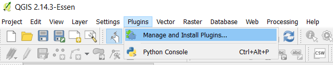
Search for Interpolation Plugin (A). Select Install Plugin (B) if this option is still available. 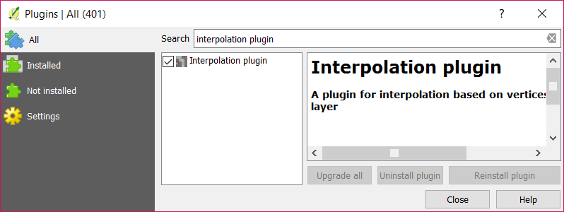
Search for QuickMapService (A) and select Install Plugin (B). 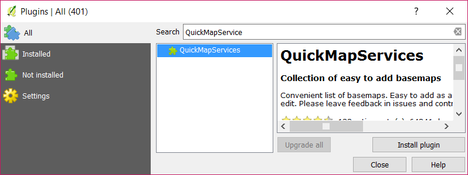
Import the data
Create a new project
Go to Project New.
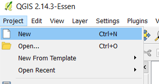
Save your project as CampusHeatMap.qgs.
Get OpenStreetMap data
Go to Web QuickMapServices OSM OSM Mapnik.
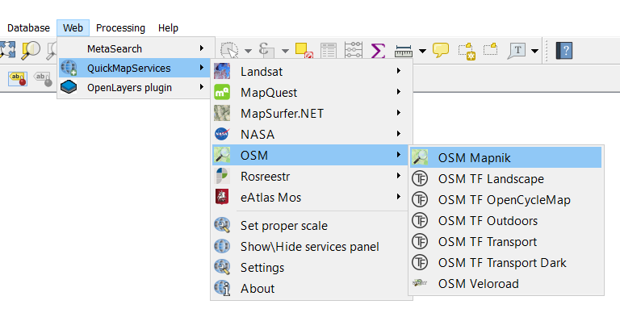
Open the layer OSM Mapnik and navigate to Campus Diepenbeek by using the Pan tool.
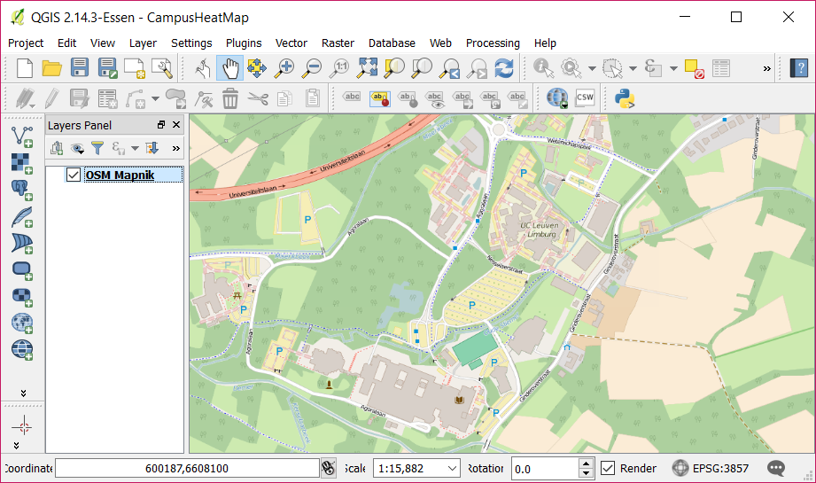
Add a layer for the temperature measurements
Go to Layer Create Layer New Shapefile Layer…
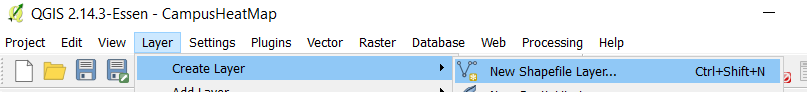
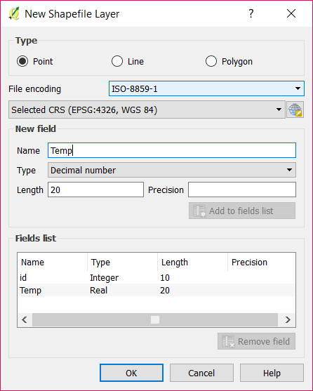
Set the type of the new shapefile layer to Point (A).
Add a new field Temp which type is Decimal number. Don’t forget to click on the button Add to fields list (B).
Click on OK (C).
Name the layer Measurements.
Add points to the Measurements layer
Right click on Measurements and select Toggle Editing.
Click on the Add Feature button. Points will now be added when you click on the map.
Place points to mark all locations where you have measured the temperature. You can add the temperature values directly, but other methods will be explained later.
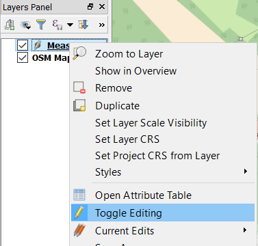 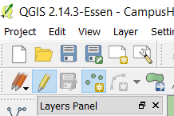
Changing the properties of the layers within the project
The checkboxes in front of the layers indicate whether a layer is visible or not.
By changing the order of the layers you decide which layers are in the front and which will function as backgrounds.
Make sure both layers are visible and Measurements is the top layer.
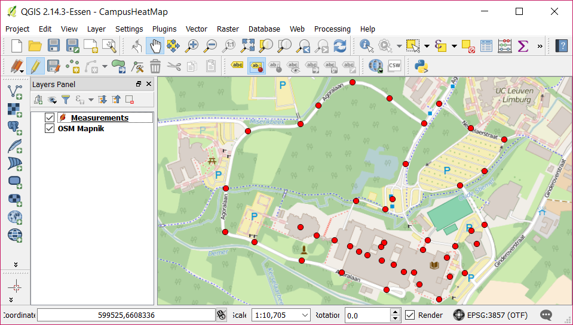
Update Measurements with your own data
This can be done in various ways:
Option 1: Insert the data manually
Right click on Measurements and select Toggle Editing (A).
Right click on Measurements again and select Open Attribute Table (B).
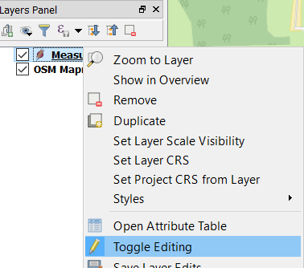 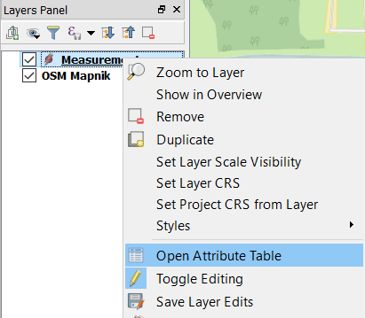
Select each cell of the Temp field in the attribute table and fill in your obtained values.
When you are done editing, select Toggle Editing again.
Option 2: Import the data from a CSV file
Delete the Temp field from the attribute table.
Right click on Measurements and click on Toggle Editing.
Right click on Measurements and open the attribute table.
Click on the Delete field button (A).
Select Temp and click on OK (B).
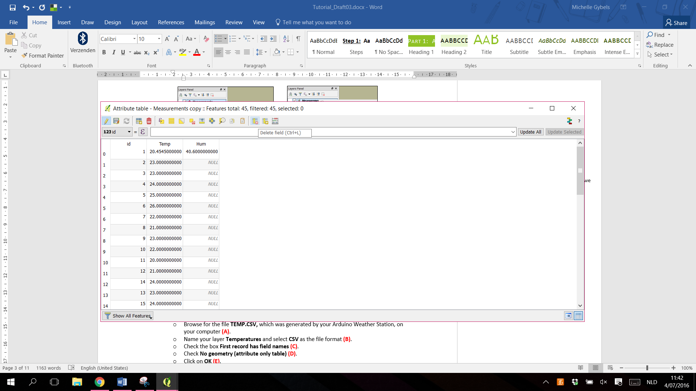 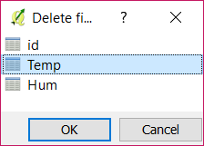
Import your CSV file as a layer.
Go to Layer Add Layer Add Delimeted Text Layer...
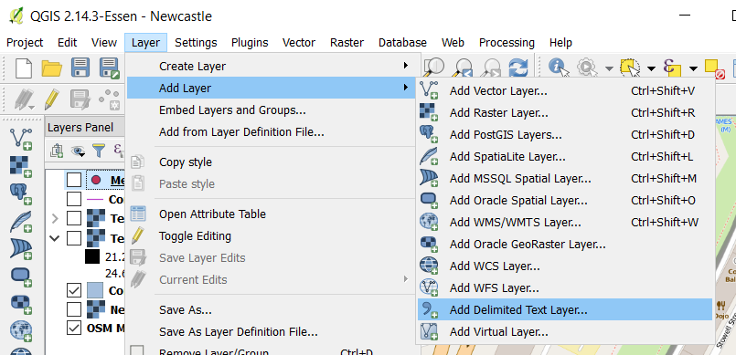
Browse for the file TEMP.CSV, which was generated by your Arduino Weather Station, on your computer (A).
Name your layer Temperatures and select CSV as the file format (B).
Check the box First record has field names (C).
Check No geometry (attribute only table) (D).
Click on OK (E).
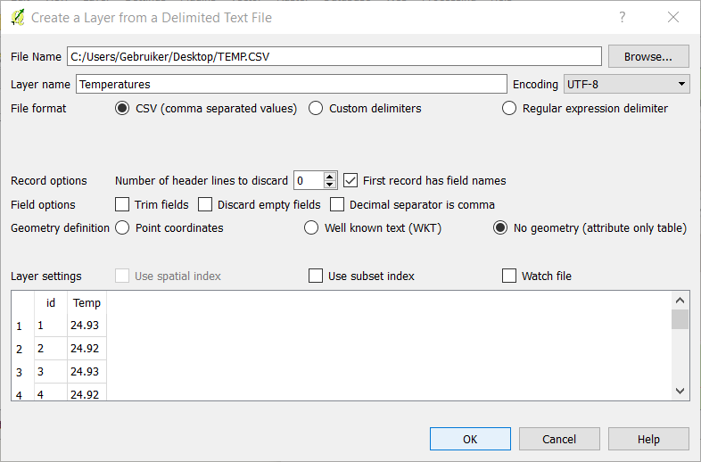
Join the Temperatures layer with the Measurements layer.
Right click on Measurements and select Properties (A).
Open the tab Joins and click on Add (B).
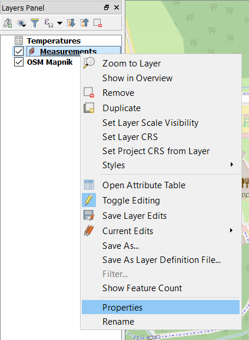
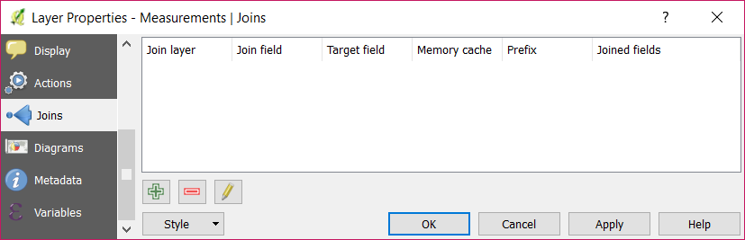
Set Temperatures as the Join layer. And id as the Join field and Target field (A).
Make sure the Custom field name prefix field is empty (B).
Click on OK (C).
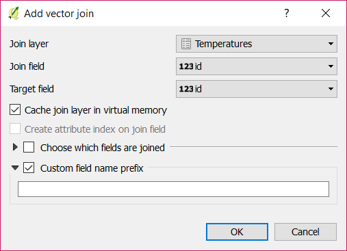
Click on OK in the Layer Properties window.
Change the visualization of the layer Measurements
Right click on Measurements and select Properties.
Click on Labels and select Temp as variable to label the data points with (A).
Optionally, you can change the marker within the Style menu (B).
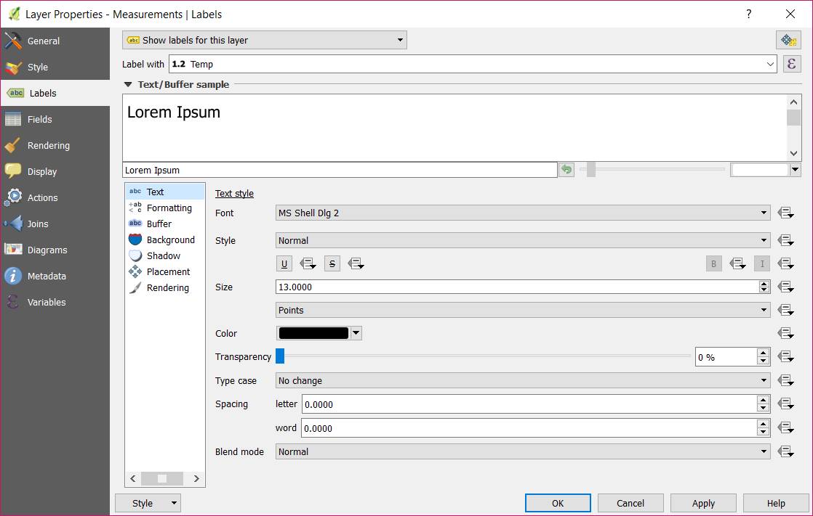
Interpolating Point Data
Open the Interpolation Plugin
Go to Raster Interpolation Interpolation.
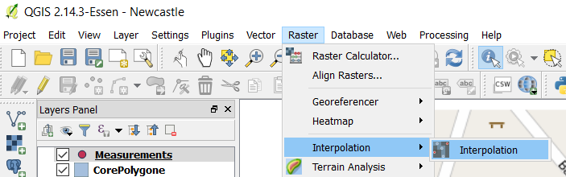
Fill in the parameters within the Interpolation Plugin dialog
Set Measurements as the input vector layer and Temp as the interpolation attribute (A).
Click on Add (B).
Within the output section, select Inverse Distance Weighting (IDW) as interpolation method (C).
Fill in the other values as presented in the image below (D).
Navigate to a folder to save the generated output file and name it temperature (E).
Click on Ok (F).
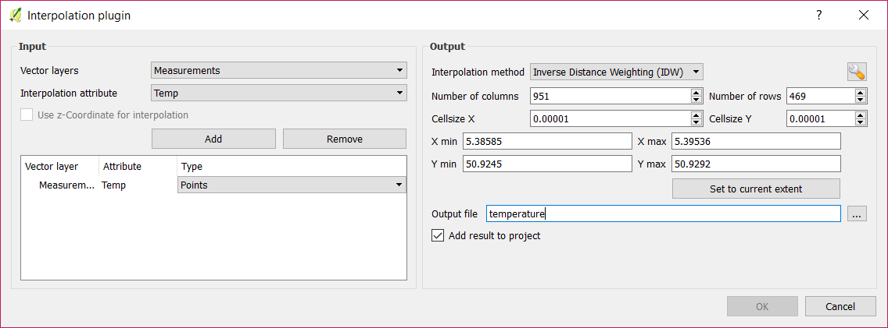
Verify your result
The generated output file is added as a layer within the project.
To zoom in on the layer, right click on Temperature and select Zoom to Layer.
Move the Measurements layer on top of Temperature.
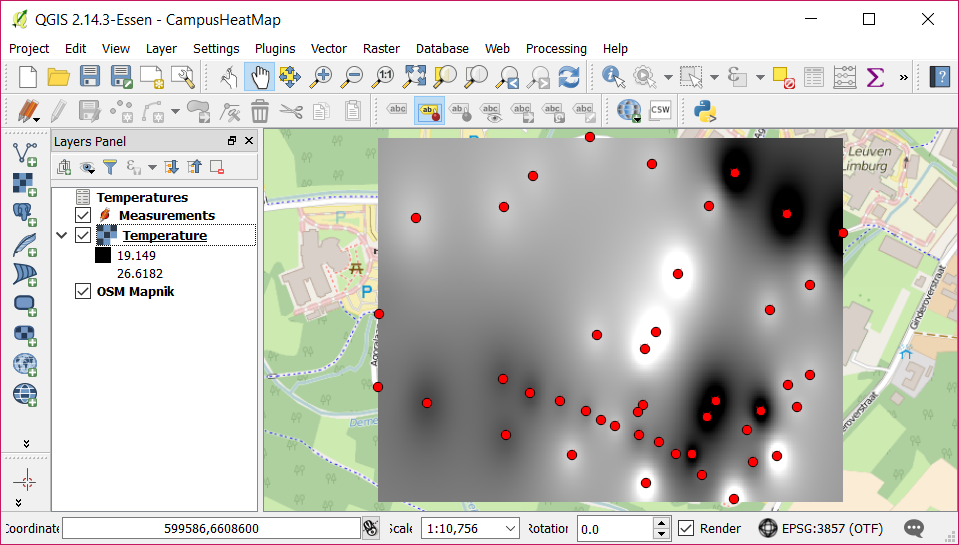
Change the style of the (clipped) layer
Adjust the color map
Right click the Temperature layer and select Properties (A).
Open the Style tab and set the render type to Singleband pseudocolor (B).
Select Spectral color map (C).
Check the Invert box, so that blue will be assigned to low temperatures and red to high temperatures (C).
Click on Classify (D).
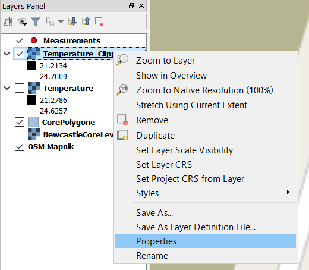 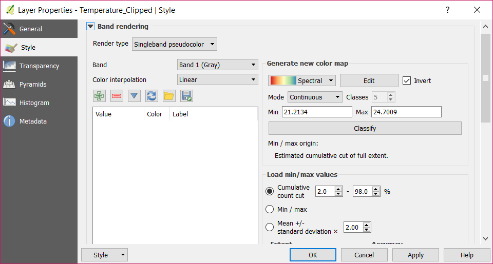
Remove the black pixels from the output
Open the Transparency tab.
Set 0 as the additional no data value.
Click on Ok.
This results in a temperature relief map for the campus.
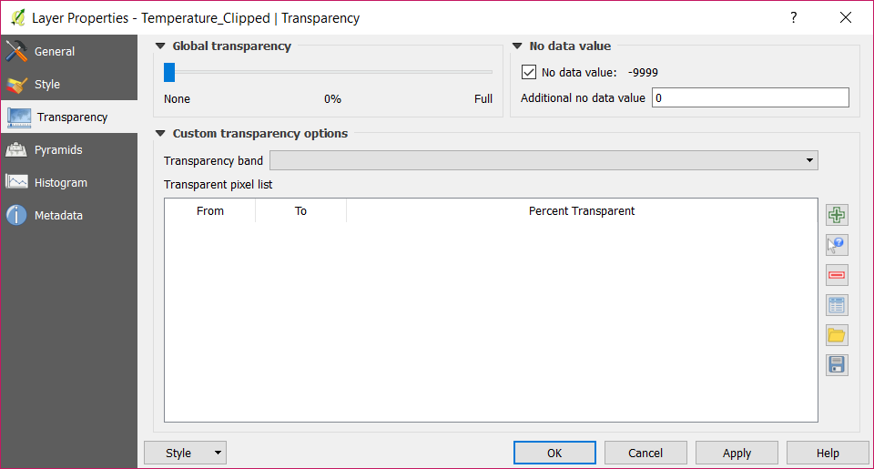
[Optional] Generate contours lines
Go to Raster Extraction Contour (A).
Set the Temperature_Clipped layer as the input file and name the output file Contours (B).
Set the interval between contour lines as 0.5 or 1(C).
Check the Attribute name box and set this to CTEMP (D).
Click on OK (E).
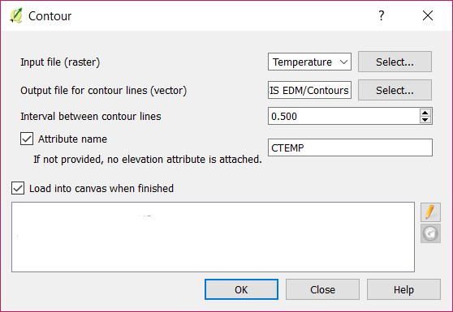 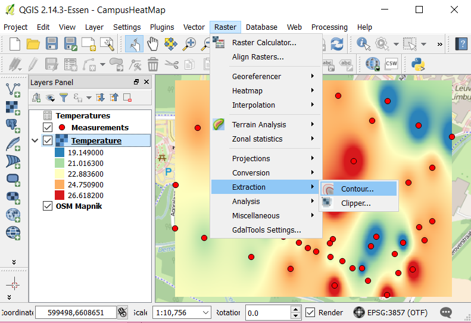
Add labels to the contour lines
Right click on the layer Contours and select Properties.
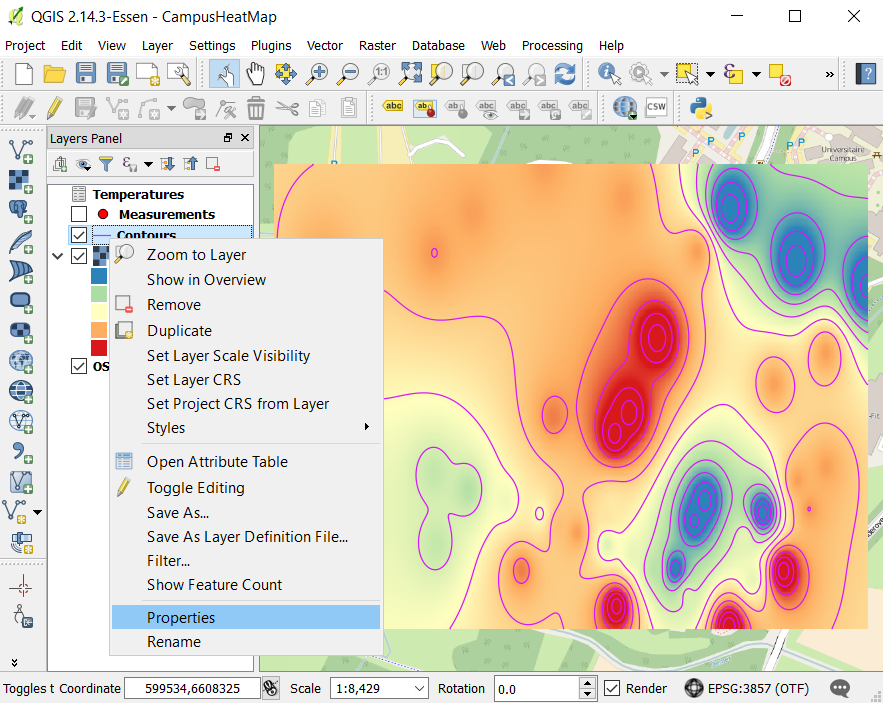
Open the Labels tab (A).
Select Show labels for this layer in the dropdown box (B).
Set CTEMP as the value for Label with (C).
Select Curved as Placement type (D).
Click on OK (E).
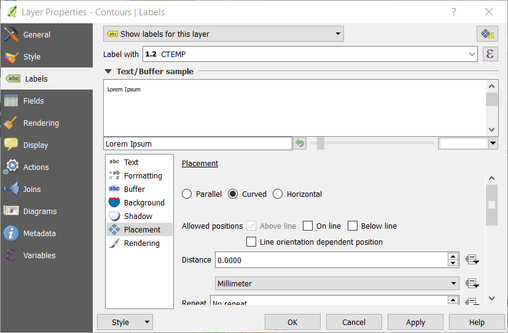
Verify the result
The result should look like this:
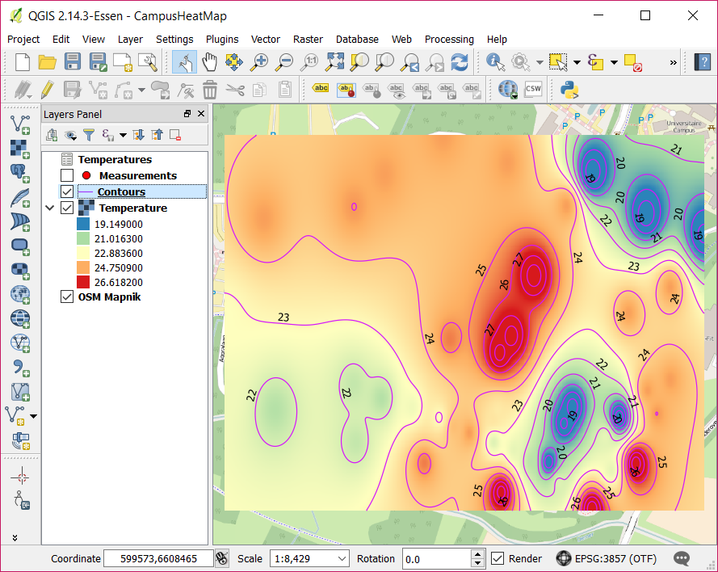
Exporting the result
Create a new print composer
Go to Project New Print Composer (A).
Set HeatMap as the print composer title (B).
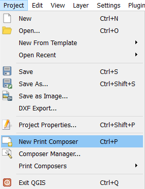 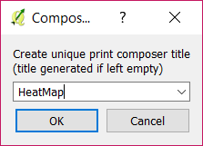
Add the created heat map
Click on the Add new map button (A).
Draw a rectangle on the presented page (B).
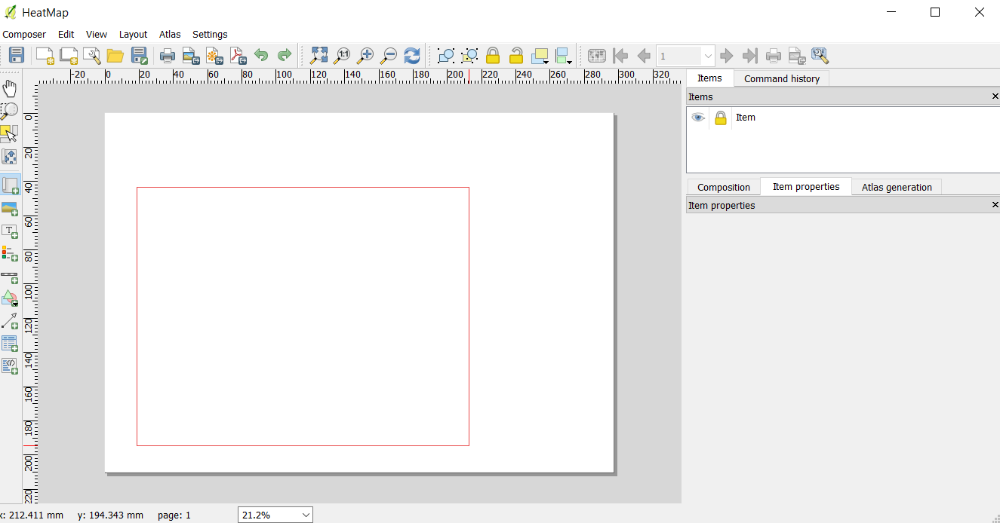
Click on the Move item content button (C).
Click on the map and drag it until the heat map is centered within the rectangle.
Set Scale to 6000 (D).
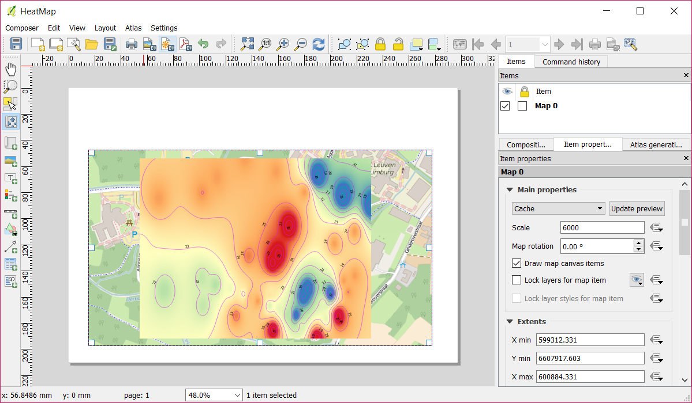
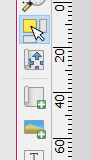
Add a title to the page
Click on the Add new label button (A).
Draw a rectangle on the page (B).
Set a title for the heat map (C).
Choose a font for the title (D).
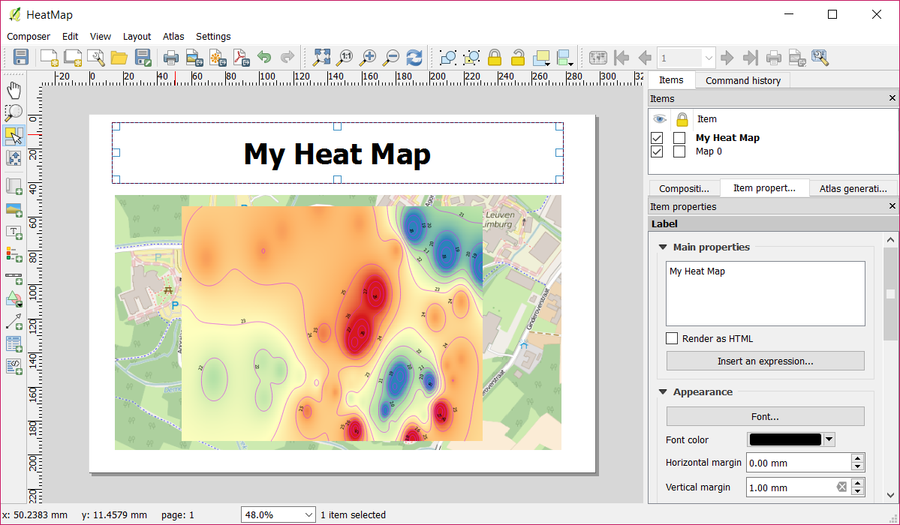
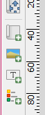
Save your creation
- Go to Composer Export as PDF. 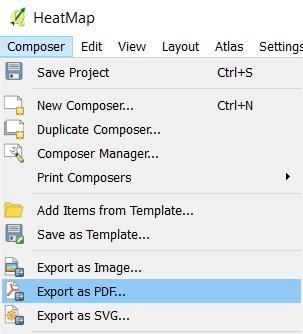
- Name your file MyHeatMap.pdf.
Made with ♥ by the senseBox team at ifgi, WWU Münster
All content is published under CC BY-SA 4.0